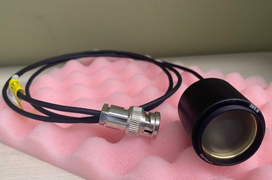
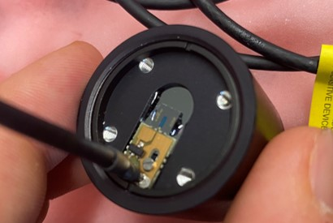

Photoconductive Antenna
A PCA is a metal diode patterned into a photoconductive semiconductor substrate. An external DC voltage is applied to the emitter PCA and therefore when the laser is incident on the antenna gap, a circuit is completed. By pulsing the laser at ultra high frequencies, we can generate a transient photocurrent that is reemitted as a THz pulse. A THz pulse can also be detected by a PCA that is not biased. For the receiver PCA, when an incident THz pulse hits the gap, it drives some current, but this is only possible when the laser is also incident on the PCA completing the gap. This means that the pulsed laser and pulsed THz have to arrive at the receiver PCA at exactly the same time. This is what makes the setup so tricky.